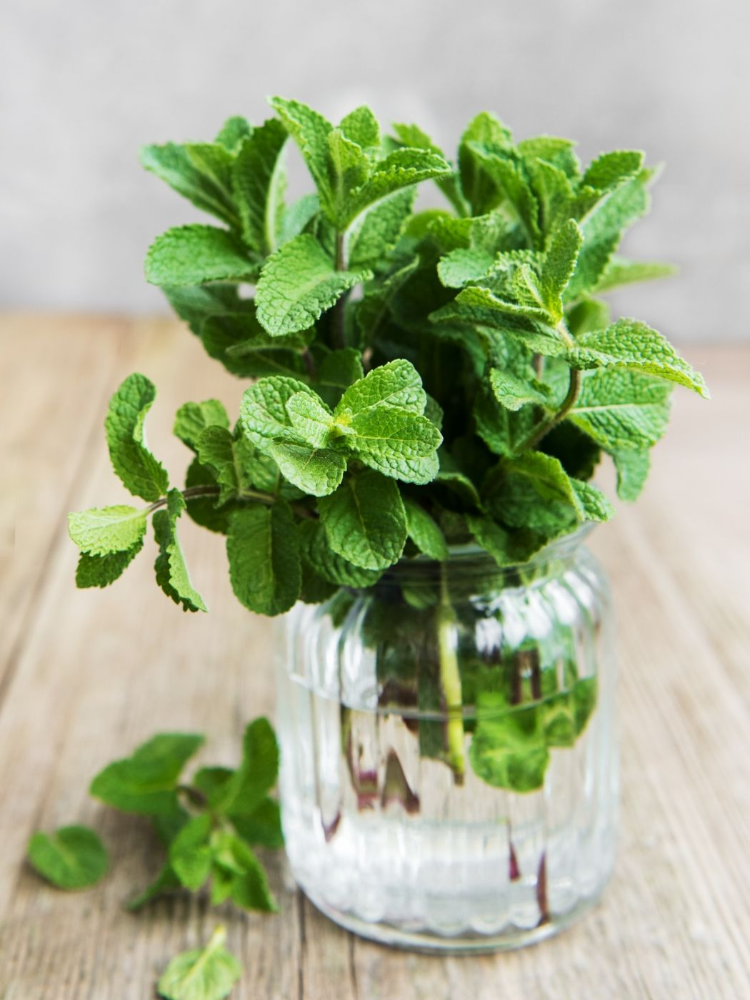

Peppermint
Mint is a perennial with very fragrant, toothed leaves and tiny purple, pink, or white flowers. It has a fruity, aromatic taste. This easy to grow indoor plant is one of the best medicinal plants for the respiratory system. You can chew it freshly, add the leaves to your tea, or make some essential oils.
Botanical name: Mentha
Benefits: It soothes headaches and relieves stress as well. Rodent-repellant.